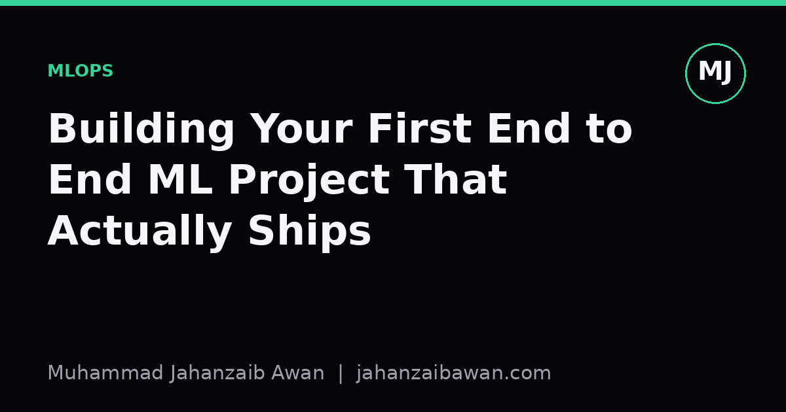

Building Your First End to End ML Project That Actually Ships
A realistic scope beats an ambitious one. Here is how to plan a first machine learning project so it gets finished, evaluated honestly, and understood by someone other than you.

Why scope kills more projects than skill
When I talk to people starting their first machine learning project, the failure mode is almost never technical. It is scope. They pick a dataset with twelve columns, a target variable, and vague ambitions of building something that predicts well, deploys nicely, and looks impressive on a CV. Three weeks later they have forty open browser tabs, a notebook with cells run out of order, and no working model. The idea was fine. The scope was not.
A realistic first project has a narrow, boring goal: get a single number from raw data to a trustworthy evaluation, end to end, with every step reproducible. Not the best number. A correct one. If you can take a dataset of, say, five thousand rows and produce a model whose reported accuracy or error you would actually trust if your career depended on it, you have learned more than someone who trained fourteen architectures on a leaking pipeline and got a suspiciously excellent score.
The reason this matters practically is that every later skill sits on top of this foundation. Hyperparameter tuning is worthless if your validation set is contaminated. Fancy feature engineering is worthless if you engineered features using information from the future relative to your test rows. Get the plumbing right first, on something small and dull, before you touch anything exciting.
A worked example of realistic scope
Suppose you pick a tabular dataset of house sales: square footage, number of bedrooms, postcode, sale date, and sale price as the target. A realistic first scope looks like this: split the data by time, not randomly, so that everything before a cutoff date trains the model and everything after tests it. This single decision is the difference between a project and a leak. If you split randomly, a house sold in March could sit in training while a nearly identical house sold in February, in the same postcode, sits in test. Your model will look brilliant and be useless, because in production you will never have future sales to peek at.
With, say, four thousand training rows and one thousand held out by date, fit a plain linear regression first. Not because it will win, but because it gives you a number to beat. Imagine it produces a mean absolute error of eighteen thousand pounds on the held out set. That number is your baseline. Now fit a gradient boosted tree model with default-ish settings. If it comes back at fifteen thousand pounds, you have a real, modest, defensible improvement of about seventeen percent. That is a good first project result. It is not glamorous, but it is true, and you can explain exactly why it is true to someone else.
Compare that to what often happens instead: someone tunes forty hyperparameters against the test set repeatedly, watches the error creep down to nine thousand pounds, and reports that number without a separate holdout that was never touched during tuning. That figure is fiction. It reflects how well the model fits the noise of that particular test set after being optimised against it, not how it will perform on new houses. The realistic scope is not about doing less work; it is about spending your limited time on the part that makes the number honest rather than the part that makes it small.

What a realistic first project should and should not include
Keep the data small enough that you can look at it. A dataset you can open, scroll, and sanity check by eye teaches you more about missing values, weird encodings, and outliers than a dataset so large you can only summarise it statistically. Tens of thousands of rows is plenty for a first project. You are not trying to beat a benchmark; you are trying to build the habit of checking your own work.
Include a written note, even a short one, describing your evaluation protocol before you look at results: how the split was made, what metric you are using and why, and what would count as a meaningful improvement over the baseline. Writing this down before you see numbers stops you from quietly moving the goalposts once you know what result would look good. It also forces you to decide, in advance, whether a two percent improvement matters or is just noise given the size of your test set.
Leave out anything that requires you to learn a new deployment platform, a new cloud service, and a new modelling technique simultaneously. Pick one axis to stretch on. If this is your first project, stretch on getting the evaluation right and treat the model itself as almost incidental; a well-tuned linear model with an honest split beats a neural network with a leaking one, every time, because only one of those numbers means anything.
Finally, resist the pull towards ensembles and stacking before you have a single trustworthy baseline. Ensembling five models each evaluated with the same leak just multiplies the fiction. Complexity should be earned by demonstrating, on clean holdout data, that the simpler thing genuinely falls short.
The practical takeaway
Size your first machine learning project so that the interesting part is the evaluation, not the algorithm. Choose a small dataset you can inspect by hand, split it in a way that respects time or grouping structure so nothing leaks, fit the dullest reasonable baseline first, and write down your evaluation plan before you see any results. A modest, honest seventeen percent improvement over a simple baseline, fully reproducible from raw data to final number, is worth more on your CV and in your own understanding than an impressive-looking score you cannot actually defend under questioning. Finish the small, correct thing first; the ambitious project can wait until you trust your own pipeline.